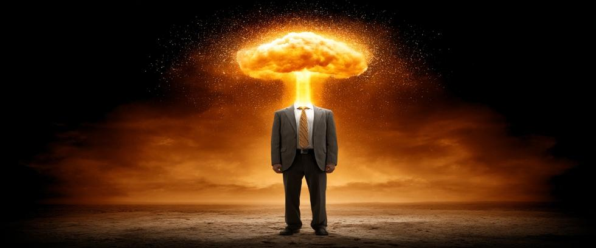

It was 5:29 AM Mountain War Time on the morning of July 16, 1945. Eighteen-year-old Georgia Green rode shotgun beside her brother-in-law Joe Wills, driving down Highway 85 about fifty miles north of the high desert valley called Jornada del Muerto near Alamagordo, New Mexico.
Suddenly, a tremendous flash shattered the predawn darkness – an incredible light that seemed to come from everywhere, and nowhere at all. There was no sound.
Mr. Wills later recalled his astonishment at two things: The sheer brilliance of the soundless light from nowhere, and the fact that his startled sister-in-law had asked, “What was that?” The thing Joe found so surprising was that Georgia never commented about what she saw. She was legally blind and had never encountered anything so bright in her life, much less from beyond a mountain range at a distance of fifty miles.
Birth of the Nuclear Age
Others saw the flash that morning as well, especially the 450 observers assembled in the valley with an excellent view of the test they called Trinity. But even the scientists there did not fully grasp Trinity’s significance. Few do, even today.
History is sometimes defined in Ages: the Stone Age, the Bronze Age, the Iron Age. That morning in New Mexico marked the beginning of the Nuclear Age. It is an Age filled with technical wonders and everyday things we take for granted that would have seemed like miracles in the past. But it is also an Age fraught with danger like no other.
For when, until now, have we ever held the power to destroy our civilization?
Trinity marked success for the Manhattan Project, the secret U.S. military program born out of fear that Nazi Germany might build nuclear weapons first during WWII. Scientists poured their energy into splitting the atom without fully considering what it meant to place such power in the hands of fallible human beings.
It is entirely too strange for fiction that the Nuclear Age began at Jornada del Muerto, a name that translates into English as “Journey of the Dead Man,” or “Journey of Death.”
"The Gadget," as they called the Trinity device, was a plutonium implosion-type bomb like the one dropped on Nagasaki a month later. It vaporized the 100-foot steel tower it stood on, turned desert sand into glass, and created a fireball more intense than the sun. The blast yielded about 21 kilotons of TNT – tiny by today’s thermonuclear standards, but sufficient to mark the dawn of a new Age.
Destroyer of Worlds
Thunderstorms in the wee hours delayed the 4:00 AM test time at Jornada del Muerto. But then the weather had cleared, and a countdown commenced in the predawn darkness.
The Manhattan Project’s premier scientist, J. Robert Oppenheimer, would later turn against nuclear weapons, partly because of the emotional impact he experienced during the test. But even he wasn’t sure what would happen that night. The desert was still, and silence descended as the countdown approached zero.
Many words have been written about the world’s first nuclear explosion, but perhaps the finest came from Field Operations Chief General Thomas Farrell: “The whole country was lighted by a searing light many times the intensity of the midday sun… It was golden, purple, violet, grey, and blue. It lit every peak, crevasse, and ridge of the nearby mountain range with a clarity and beauty that cannot be described but must be seen to be imagined. It was that beauty the great poets dream about but describe most poorly and inadequately.”
Ten miles away at base camp, it was said to be “Hot as an oven” for a moment. Windows shattered 180 miles away in Silver City. The flash was even seen in Amarillo, 280 miles to the east on the far side of the Rocky Mountains.
Reactions in the valley varied. There was a spontaneous cheer at first, then a state of sobriety set in. Some laughed. Others cried. Most were silent. Test director Kenneth Bainbridge told Oppenheimer, “Now we are all sons a bitches.”
Oppenheimer himself was seen strutting around like a gunslinger in an old western movie, hands by his sides, poised to pull imaginary pistols. He later quoted the Hindu scripture the Bhagavad Gita, “Now I am become Death, the destroyer of worlds.”
And so it was. Trinity is history now, the trailblazing scientists mostly forgotten. Yet in retrospect, Trinity’s legacy is more powerful today than that of WWII itself – or all of history’s wars combined. Our weapons hold the power to destroy our civilization now. Will we use them?
Oppenheimer and the Weight of Regret
Oppenheimer’s “...destroyer of worlds” quote was prophetic. The physicist understood they had opened a door that might never be closed. But his fall from grace after turning against nuclear weapons was swift.
Oppenheimer was stripped of his security clearance in 1954 amid fabricated allegations of disloyalty – his numerous objections dismissed as feeble attempts at concealing his guilt. The scientist who did the most to build atomic bombs became a martyr of conscience sacrificed on the altar of military power.
Yet Oppenheimer kept busy, lecturing about physics and helping establish the World Academy of Arts and Sciences in 1960. But in 1967, he succumbed to throat cancer at age 62 – penance paid for a lifetime of chain smoking.
The Fallout—Literally and Figuratively
The physical fallout from Trinity was immediate and deadly. Radioactive dust covered a widespread area far beyond the local area. Regional residents, mostly Hispanic and Indigenous communities, were never warned – or even acknowledged as victims.
Some died of cancer and other radiation-related illnesses as nuclear testing continued in the years that followed. Generations suffered in silence when the government refused to recognize their exposure until decades later, and even then, their compensation was inadequate.
Trinity was the first nuclear test, but the harm testing did was hidden from view so that testing could continue. The terrible truth is the government knew that nuclear testing would kill some Americans, but chose to sacrifice them in the name of military power anyway.
From Test to Template
What Trinity started inevitably spread.
The Soviet Union tested its first atomic bomb in 1949. England followed in 1952, France in 1960, and China in 1964. Other countries joined the club, and what began with Trinity has grown to become the gold standard of global power.
The Cold War saw a dramatic increase in testing. By the end of the 20th century, more than 2,000 nuclear explosions had scarred the Earth. Entire islands were erased from existence, while soldiers and civilians alike were critically exposed without being told about the dangers they faced.
The Psychological Impact
Trinity changed more than how wars are fought. It changed our perception of war as well.
Wars have always been horrific, yet they were easier to understand in a world where disputes are sometimes settled by force before everyone moved on. But not after Trinity. A single bomb could now destroy a city in seconds. No one moves on. Armies or invasions are no longer required – just a hasty decision by a single individual to attack.
This psychological shift had consequences. It normalized the idea that we constantly live on the edge of destruction. Children practiced duck-and-cover drills at school, families built fallout shelters in their backyard, and leaders played political power games with millions of lives.
But that attitude has faded with time, and nuclear weapons are largely ignored by the public today. Which is unfortunate. It may be true that duck-and-cover drills and fallout shelters are useless against nuclear weapons, but those activities are relatively harmless, while ignoring nuclear weapons is certainly living dangerously.
Trinity's Shadow
Modern thermonuclear weapons are much more powerful than the Gadget. Yet countries like Russia and America still maintain thousands of nuclear warheads on high alert. Hypersonic delivery systems and AI-enhanced targeting capabilities mean escalation happens faster and is harder to control.
Worse yet, nuclear weapons are no longer the exclusive domain of a few major powers. Regional tensions between India and Pakistan, North and South Korea, or Israel and Iran also carry risks of nuclear miscalculation.
The Illusion of Control
Trinity was the first of many steps in an ongoing journey. In the beginning, it was thought that the forces unleashed by splitting atoms could be contained and controlled. But time has proven otherwise.
We have failed to stop nuclear proliferation. The spread of nuclear-armed nations has continued to grow. We failed to prevent numerous mechanical and communications breakdowns that almost started civilization-ending nuclear wars. Failed after fifty-five years to honor our legal commitments under the Non-Proliferation Treaty to eliminate our own nuclear weapons.
And now we’ve made the unthinkable thinkable by constructing new tactical nukes, then pre-justifying their use with delusional “escalate-to-deescalate” arguments.
We stand at a crossroads. We can continue down the path of Trinity – hoping that deterrence never fails, that systems never break down, and that leaders act rationally at all times.
Or we can stop.
Legacy of Trinity
At Our Planet Project Foundation, we believe the legacy of Trinity should not be one of scientific achievement or pride. It should be a cautionary tale about an honest mistake born from a false sense of necessity. A reminder that pursuing certain kinds of science is a dangerous gamble, no matter how careful we are.
Trinity was the start of a journey that must never reach a final destination. The Journey of Death leads nowhere we want to go.